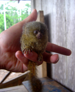

Ecuador's Amazon Rain Forest
Chacay has established partnerships with a variety of lodges dedicated to ecotourism, environmental conservation, and community service in the Amazon rainforest of Ecuador. Most of the lodges are owned and operated by members of the local communities, meaning that with their extensive knowledge of the Amazon wildlife and biodiversity they can give Chacay guests a unique and genuine introduction to the Ecuadorian Amazon jungle.
Itineraries:
We have itineraries designed for four or five day visits: the following is a sample our four day, three night itinerary.
Location: lower part of Cuyabeno Reserve (Aguarico and Cuyabeno Rivers)
Day 1. After a morning flight from Quito, you'll travel to Tierras Orientales where you will start your three hour canoe journey down the Aguarico and continue along the Cuyabeno Black Water River. The ride takes you to the front steps of your lodge where you will be welcomed by members of the Siona Tribe. You'll have a chance to catch your breath and explore the compound. After dinner, your naturalist guide will introduce you to wonders of the Amazon Rain Forest, focusing on the Cuyabeno Natural Reserve and the culture of the Siona.
Day 2. You will start the day with an early morning canoe excursion, the best hours for experiencing the thriving rainforest. After breakfast, we trek in the rainforest with native guides who will explain the practical and medicinal uses of various trees and plants. After lunch, you will be taken on a canoe excursion through the the beautiful landscapes where you may be able to spot monkeys or pink fresh water dolphins. After dinner we will venture for a night stroll through the forest to find species of insects, and with a bit of luck, snakes or frogs.

Day 3. Again, we will set out early in the morning and spend the day exploring. Navigating downstream to observe an exposed clay bank, we will observe colorful parrots and parakeets feed on the clay to draw the toxins from their bodies.
After breakfast back at the lodge, we trek into pristine primary rainforest. Our native guide will share his knowledge, explaining the medicinal and practical uses of the rainforest flora and fauna. After lunch, we navigate along the Cuyabeno River for another opportunity of seeing the freshwater pink and grey river dolphins. We also try our luck at Piranha fishing.
Finally, we climb the Kichwa Birdwatching Tower. Above the canopy, the tower provides a breathtaking view of the surrounding rainforest from which one can observe a variety of species including toucans, parrots and monkeys. After dinner, we venture out on a night excursion to search for caimans and nocturnal birds.
Day 4. After breakfast, we navigate along Cuyabeno rivers to the Kichwa Indian Community where our naturalist guide explains the culture and traditions of the native people from the past to the present. We travel by canoe down the Cuyabeno River and back along the Aguarico River to Pto. Gregorio, where our bus/truck will take us to Lago Agrio. We then depart by plane or bus back to Quito.